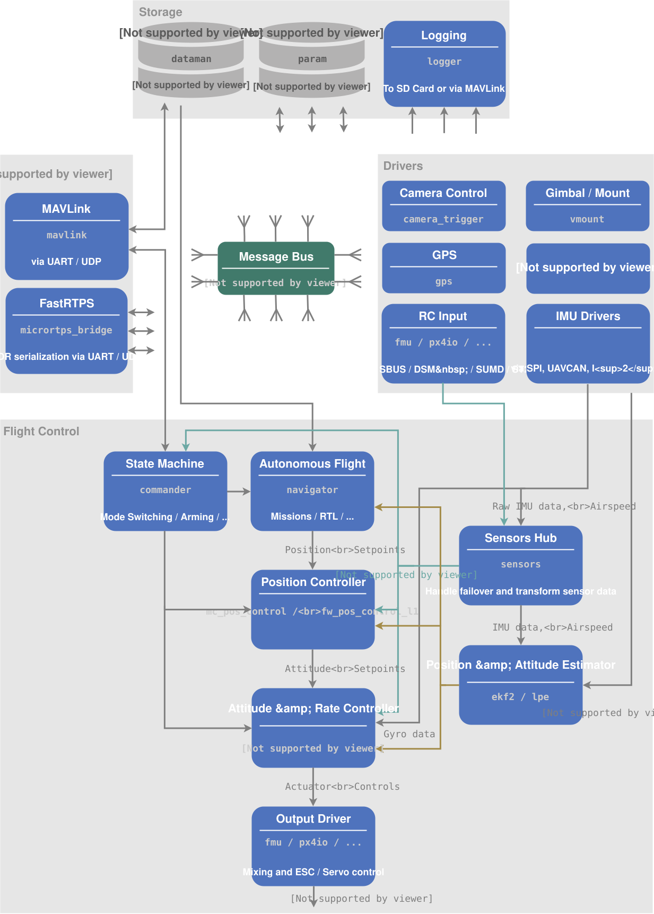
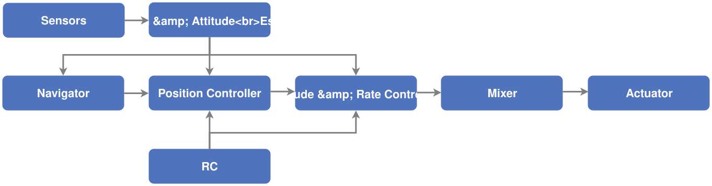
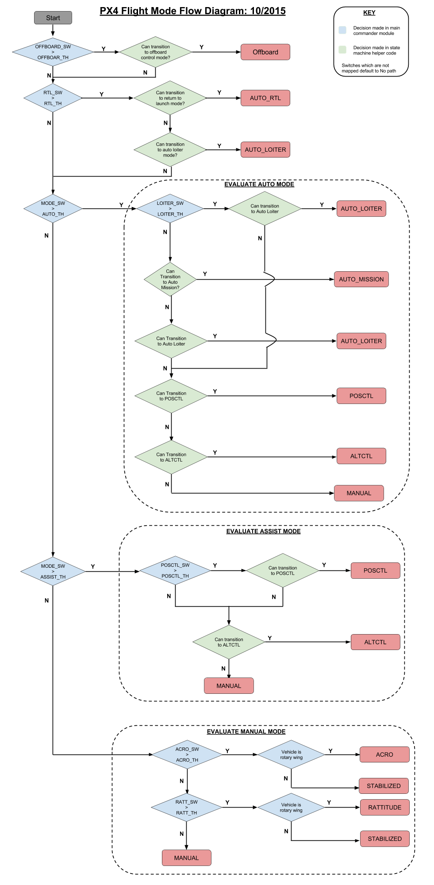
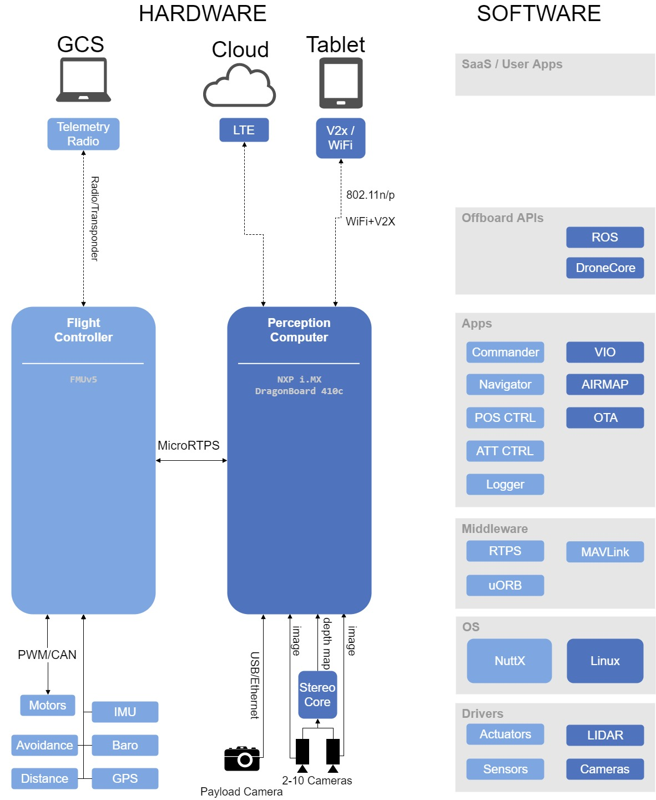
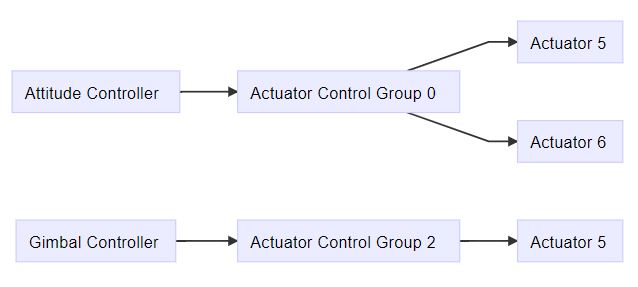

PX4开发基本概念解读
进行PX4开发，必先了解PX4体系结构及相关概念。下面及简要介绍PX4开发的相关知识。
PX4体系结构
PX4由两个层次组成：一是飞行控制栈(flight stack)，即自驾仪的软件解决方案，二是中间件，一种可以支持任意类型自主机器人的通用机器人中间件。
所有的无人机机型，事实上所有的包括船舶在内的机器人系统，都具有同一代码库。整个系统设计是反应式(reactive)的，这意味着：
- 所有的功能被划分为可替换部件
- 通过异步消息传递进行通信
- 该系统可以应对不同的工作负载
除了这些运行时考虑之外，其模块化最大限度地提高了系统的可重用性。

飞行控制栈
飞行控制栈是自主无人机的引导、导航和控制算法的集合。它包括用于固定翼，多旋翼和垂直起降机身的控制器以及用于姿态和位置的估计器。
图2显示了飞行控制栈的构建块的预览。 它包含从传感器，RC输入和自主飞行控制（导航器）到电机或伺服控制（执行器）的完整管道。

估计器采用一个或多个传感器输入，组合它们，并计算无人机状态（例如来自IMU传感器数据的姿态）。
控制器是将设定值和测量或估计状态（过程变量）作为输入的组件。 其目标是调整过程变量的值，使其与设定值匹配。 输出是最终达到该设定点的校正。 例如，位置控制器将位置设定点作为输入，过程变量是当前估计的位置，输出是将车辆移向期望位置的姿态和推力设定点。
混合器接受强制命令（例如向右转）并将它们转换为单独的电机命令，同时确保不超过某些限制。 该平移特定于无人机类型并且取决于各种因素，例如关于重心的马达布置或无人机的转动惯量。
中间件
中间件主要包括嵌入式传感器的设备驱动程序，与外部世界的通信（协同计算机，地面控制站等）和uORB发布 - 订阅消息总线。
此外，中间件包括一个模拟层，允许PX4飞行代码在桌面操作系统上运行，并在模拟的“世界”中控制计算机建模的无人机。
更新速率
由于模块等待消息更新，因此驱动程序通常会定义模块更新的速度。 大多数IMU驱动器以1kHz采样数据，将其集成并以250Hz发布。 系统的其他部分，例如导航器，不需要如此高的更新速率，因此运行速度相当慢。
可以通过运行uorb top在系统上实时检查消息更新率。
运行时环境
PX4可在各种提供POSIX-API的操作系统上运行（例如Linux，macOS，NuttX或QuRT）。 它还应该具有某种形式的实时调度（例如FIFO）。
模块间通信（使用uORB）基于共享内存。 整个PX4中间件在单个地址空间中运行，即在所有模块之间共享存储器。
有两种不同的方式可以执行模块：
任务：模块在自己的任务中运行，具有自己的堆栈和进程优先级（这是更常见的方式）。
工作队列：模块在共享任务上运行，这意味着它不拥有堆栈。 多个任务在同一堆栈上运行，每个工作队列具有一个优先级。
通过指定将来的固定时间来安排任务。 优点是它使用较少的RAM，但不允许任务在消息上休眠或轮询。
工作队列用于周期性任务，例如传感器驱动器或陆地探测器。
操作系统相关信息
NuttX
NuttX是在飞行控制板上运行PX4的主要RTOS。 它是开源（BSD许可证），重量轻，高效且非常稳定。
模块作为任务执行：它们有自己的文件描述符列表，但它们共享一个地址空间。 任务仍然可以启动共享文件描述符列表的一个或多个线程。
每个任务/线程都有一个固定大小的堆栈，并且有一个周期性任务，它检查所有堆栈是否有足够的可用空间（基于堆栈着色）。
Linux / MacOS
在Linux或macOS上，PX4在单个进程中运行，并且模块在它们自己的线程中运行（NuttX上的任务和线程之间没有区别）。
PX4飞行模式
飞行模式定义了系统在任何给定时间的状态。用户可以使用远程遥控器或者QGroundControl地面站来进行飞行模式切换。

Dronecode平台软硬件架构
Dronecode是开源的无人机平台，其软硬件体系结构如图4所示。图4左侧显示了一种可能的硬件配置，其中飞行控制器（浅蓝色）通过RTPS连接到感知计算机（深蓝色）。 感知计算机使用相机传感器阵列提供视觉控制和物体避免，并且具有单独的有效载荷相机。
图的右侧显示了端到端软件堆栈。 堆栈“近似”水平对齐图表的硬件部分，并进行颜色编码，以显示飞行控制器上运行的软件以及配套计算机上的软件。

PX4位姿控制
多旋翼位置控制

混合和执行器
PX4架构保证了核心控制器中不需要针对机身布局做特别处理。
混控指的是把输入指令（例如：遥控器打右转）分配到电机以及舵机的执行器（如电调或舵机PWM）指令。对于固定翼的副翼控制而言，每个副翼由一个舵机控制，那么混控的意义就是控制其中一个副翼抬起而另一个副翼落下。同样的，对多旋翼而言，俯仰操作需要改变所有电机的转速。
将混控逻辑从实际姿态控制器中分离出来可以大大提高复用性。
控制管线
一个特定的控制器（如姿态控制器）发送特定的归一化（-1..+1）的命令到给混合（mixing）,然后混合后输出独立的PWM到执行器（电调，舵机等）.在经过输出驱动如（串口，UAVCAN，PWM）等将归一化的值再转回特性的值（如输出1300的PWM等）。

控制组
PX4 有输入组和输出组的概念，顾名思义：控制输入组（如： attitude），就是用于核心的飞行姿态控制，（如： gimbal ）就是用于挂载控制. 一个输出组就是一个物理总线，如前8个PWM组成的总线用于舵机控制，组内带8个归一化（-1..+1）值,一个混合就是用于输入和输出连接方式（如:对于四轴来说,输入组有俯仰，翻滚，偏航等，对于于向前打俯仰操作，就需要改变输出组中的4个电调的PWM输出值，前俩个降低转速，后两个增加转速，飞机就向前）。
对于简单的固定翼来说，输入0（roll），就直接连接到输出的0（副翼）。对于多旋翼来说就不同了，输入0（roll）需要连接到所有的4个电机。
参考链接
- PX4 Development Guide (STABLE - v1.8.2),by Dronecode.
- PX4开发指南, by Dronecode.